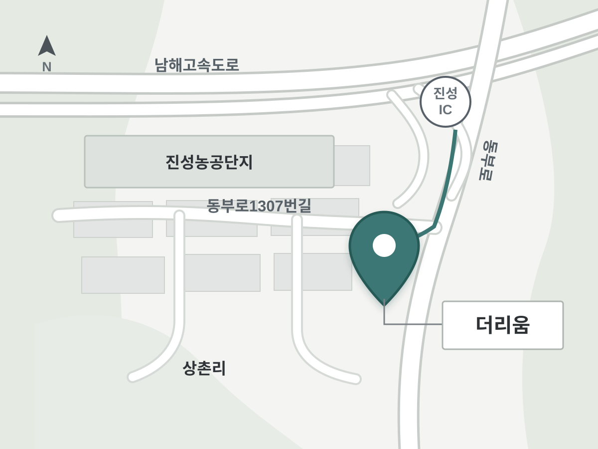

Location 더리움 약도 경상남도 진주시 진성면 동부로1307번길 37 진성IC 남쪽, 진성농공단지 동쪽에 위치합니다. 동부로에서 동부로1307번길로 진입하면 웨딩홀과 지상 주차장을 확인할 수 있습니다.
 진성IC에서 동부로를 따라 남쪽으로 이동 동부로1307번길 진입 후 진성농공단지 동쪽에서 더리움 확인 지상 주차장과 대형 차량 진입 위치는 예식 시간대별 확인